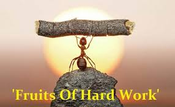

A average guy with Strong
mindset

Beauty
"Rest is not idleness, and to lie sometimes on the grass under trees on a summer's day, listening to the murmur of the water, or watching the clouds float across the sky, is by no means a waste of time."

KFC Story
He is a seventh grade dropped out who tried many ventures in life but tasted bitter every time. He started selling chicken at his age of 40 but his dream of a restaurant was turned down many times due to conflicts and wars. Later he attempted to franchise his restaurant. His recipe got rejected 1,009 times before the final approval. And soon the secret recipe, “Kentucky Fried Chicken” became a huge hit worldwide. KFC was expanded globally and the company was sold for 2 million dollars and his face is still celebrated in the logos.